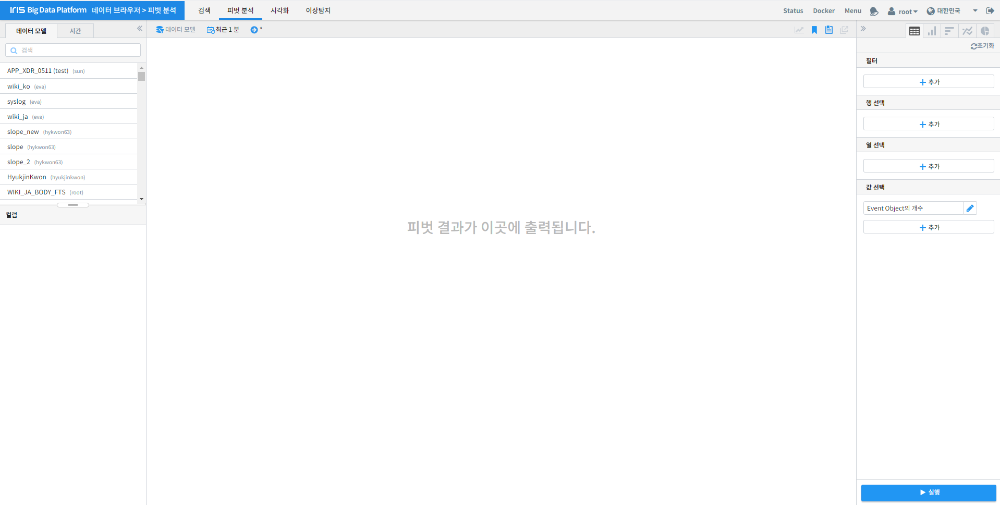
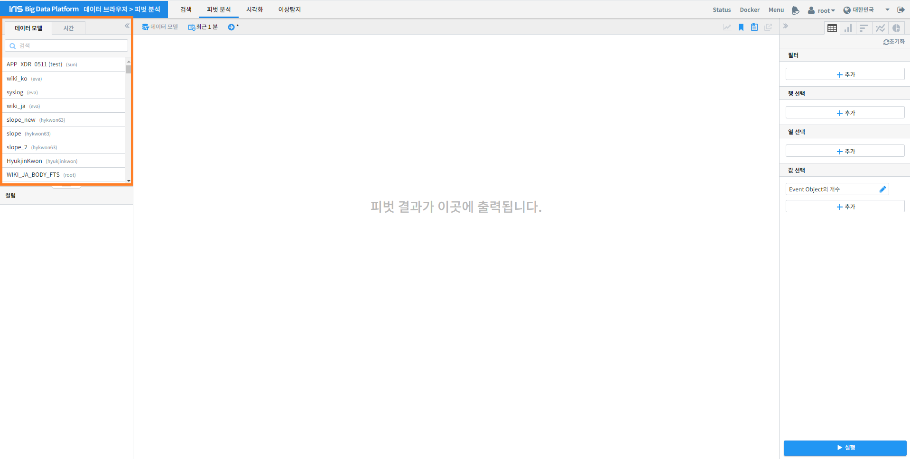
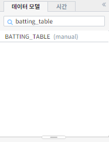
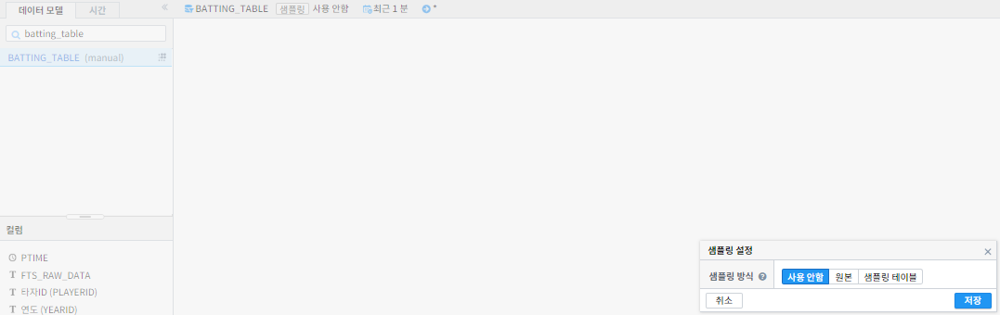
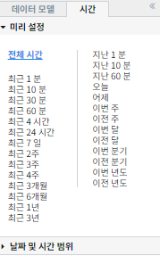
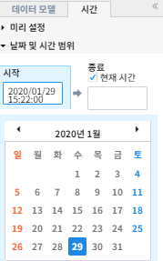
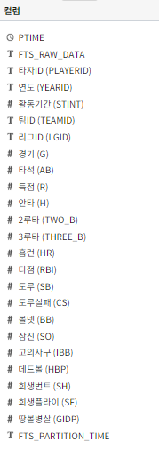
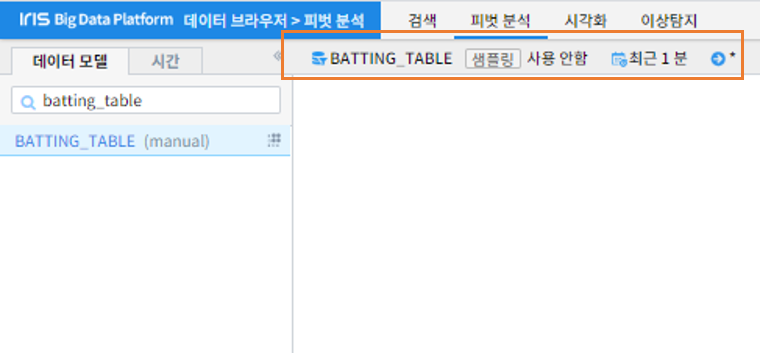

피벗 분석 데이터 준비하기¶
본 문서는 피벗 분석대상 데이터를 조건에 맞게 검색하고 선택한 데이터의 필드 정보를 확인 하는 방법을 기술하고 있습니다.
피벗 화면 구성¶
피벗 화면의 구성은 다음과 같습니다.
데이터 불러오기¶
데이터 검색¶
먼저 분석 대상 데이터 모델을 선택하겠습니다
분석 대상 데이터를 직접 마우스 클릭을 통해 선택하거나 아래와 같이 데이터 이름을 입력해 데이터를 검색 할 수 있습니다.
샘플링 필요할 때는 데이터 모델이름 우측의 작은 아이콘을 클릭합니다.
검색 기간 설정¶
다음은 검색 기간을 설정 하겠습니다.
우리는 전체 기간에 해당하는 데이터를 불러오려 하기 때문에 위 화면의 ‘전체 시간’을 클릭하겠습니다. 보다 구체적인 기간을 지정하기 위해 아래 ‘날짜 및 시간 범위’를 활용할 수도 있습니다.
데이터 타입 확인¶
화면 왼쪽 하단의 컬럼 탭에서는 선택한 데이터의 컬럼과 데이터 타입들을 확인할 수 있습니다.
이와 같이 사용할 피벗 분석 대상 데이터의 정보는 아래와 같이 화면 상단에서 간단히 확인할 수 있습니다.
위와 같은 경우 전체기간의 샘플링을 사용 안한 BATTING_TABLE 데이터를 나타냅니다.